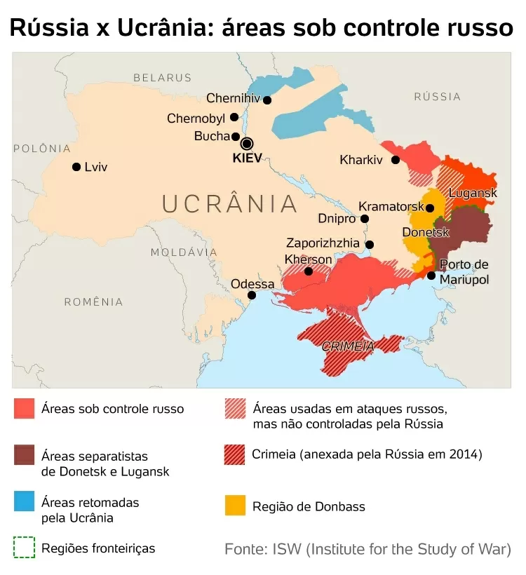

06.abr.2022/ Soldados ucranianos carregam o caixão de um soldado morto enquanto servia seu país, durante seu funeral no cemitério Lychakiv em Lviv, oeste da Ucrânia Imagem: YURIY DYACHYSHYN / AFP
Kiev, Ucrânia, 11 Mai 2022 (AFP) - A invasão russa da Ucrânia provocou a morte de 561 soldados da Guarda Nacional ucraniana até agora, informou, nesta quarta-feira (11), o chefe da corporação, que inclui o batalhão Azov, atualmente entrincheirado no complexo siderúrgico de Mariupol.
Outros 1.697 soldados da Guarda Nacional ficaram feridos desde o dia 24 de fevereiro, detalhou o comandante da Guarda Nacional, Oleksiy Nadtochy, em comunicado.
Tanto a Rússia quanto a Ucrânia não costumam divulgar os números de suas baixas no conflito.
Em meados de abril, o presidente ucraniano, Volodymyr Zelensky, assinalou que entre 2.500 e 3.000 soldados ucranianos tinham morrido e que outros 10.000 estavam feridos, e admitiu que era "difícil dizer quantos destes poderiam sobreviver".
A Guarda Nacional ucraniana, vinculada ao Ministério do Interior, foi criada em março de 2014, depois que a Rússia tomou o controle da península da Crimeia, no Mar Negro, e concentrou tropas junto às fronteiras orientais da Ucrânia.
Por lei, a corporação pode contar com até 60.000 efetivos e absorveu diversos grupos de autodefesa que estavam na vanguarda da revolução ucraniana (Maidan) de 2014, assim como muitos regimentos nacionalistas como o batalhão Azov.
As autoridades ucranianas informaram ontem que mais de 1.000 integrantes do batalhão Azov continuavam entrincheirados na usina siderúrgica de Azovstal, entre os quais havia centenas de feridos.
As autoridades italianas informaram que, desta vez, a ação não é obra de grupos criminosos que buscam um resgate, mas sim do 'Killnet', um coletivo militante pró-Rússia que, segundo vários especialistas, está ligado às forças armadas de Moscou
ROMA, 11 MAI (ANSA) - Um ataque cibernético de hackers russos atingiu nesta quarta-feira (11) diversos sites da Itália, incluindo os portais do Ministério da Defesa, do Instituto Superior de Saúde (ISS) e do Senado italiano.
As autoridades italianas informaram que, desta vez, a ação não é obra de grupos criminosos que buscam um resgate, mas sim do 'Killnet', um coletivo militante pró-Rússia que, segundo vários especialistas, está ligado às forças armadas de Moscou.
Com uma mensagem nas redes sociais, o Killnet, que também teria tentado bloquear o sistema de votação do Festival Eurovision, em Turim, ameaçou à Itália dizendo que "este pode ser o começo do seu fim".
O grupo reivindicou a invasão em seus canais no Telegram, publicando a lista de sites invadidos. Ao todo, foram setes páginas afetadas: do Senado; Ministério da Defesa; ISS; Clube de Automóvel da Itália; portal Kompass, que reúne milhares de empresas e análises de mercado; Instituto de Estudos Avançados de Lucca, que lida com tecnologia digital; e do Infomedix, empresa de serviços.
A Agência Nacional de Cibersegurança está "trabalhando em estreita colaboração com as administrações afetadas para restaurar seus sites, analisando o fenômeno e, ao mesmo tempo, sugerindo as primeiras contramedidas técnicas adequadas".
O ataque, de acordo com especialistas, é um DDos (Distributed Denial of Service, em inglês), ou seja, o site é alvo de milhares de solicitações de acesso que o descontrolam e o tornam inacessível. Basicamente, uma grande quantidade de dados é enviada para os servidores ao mesmo tempo, usando várias fontes, para que o site seja inundado com solicitações falsas que retardam ou bloqueiam sua operação.
Geralmente, as ações não produzem danos, mas sim desserviços e, portanto, não comprometem a infraestrutura de TI. Segundo apuração, o ataque realmente não danificou os sistemas e não houve perda de dados.
De acordo com a presidente do Senado da Itália, Elisabetta Casellati, "nenhum dado do ataque hacker que envolveu a rede externa do Senado". "Obrigado aos técnicos pela intervenção imediata. São episódios graves, que não devem ser subestimados", escreveu no Twitter.
Em nota, o Ministério da Defesa negou o ataque. "Com referência à notícia que circulou sobre a impossibilidade de chegar ao site www.difesa.it, o Estado-Maior da Defesa especifica que se deve a atividades de manutenção que estão planejadas há algum tempo, em vigor no site". (ANSA).